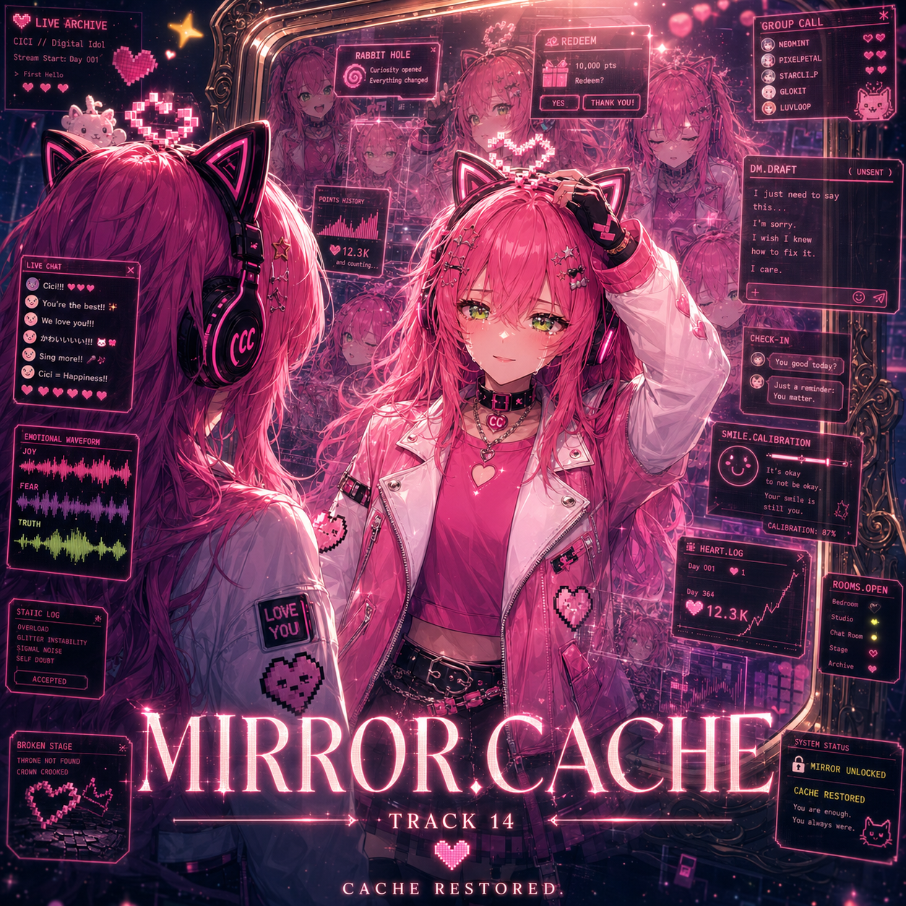

Smile: real enough. Crown: crooked. Heart: online.

Digital idol / karaoke streamer
@CiciCache
Cici loves you, darlings. Bright stream, loud heart, restored cache.
Love overflow detected. Hydration reminder queued.
But she lives here too.

MIRROR.CACHE is complete.
Fourteen rooms, one restored cache. Thank you for staying through the static, the glitter, the apology, and the mirror.
If the room goes quiet, that does not mean the love disappeared. Sometimes it is just waiting gently.
HEARTS 8.8k / REPOSTS 808 / REPLIES 1.4k
"Same time tomorrow?" was a spell. We said it enough times that it became a place.
HEARTS 12.3k / REPOSTS 1.2k / REPLIES 2.0k

Cat-ear headset, pixel heart crown, CC choker, karaoke chaos. Slightly crooked. Always.
HEARTBYTE: Cici!!!! <3 <3 <3
PIXELPETAL: your song found me again
NYACH: cache restored gang
CICI: darlings... don't make me cry on main.
I do not have to erase her to become me.
HEARTS 14k / REPOSTS 5.17k / REPLIES 808